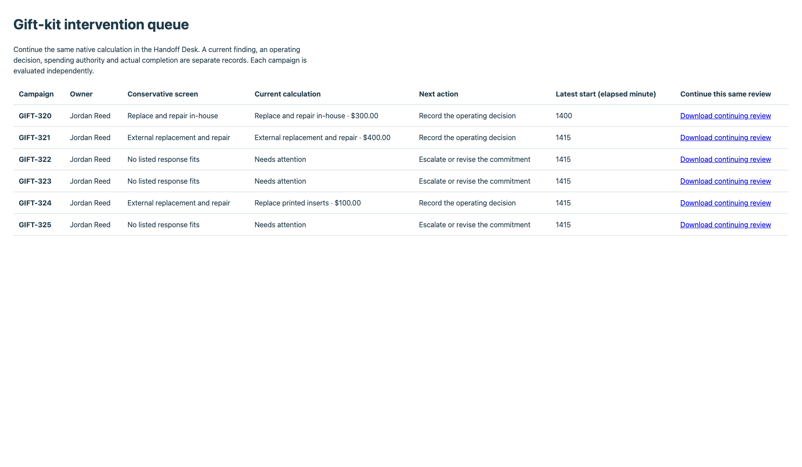

Leah has several gift-kit campaigns to protect. Each promises 120 usable kits by its original one-day cutoff, with a $600 correction limit. Jordan needs to know which campaign requires a booking, a narrower diagnosis or a different commitment before the remaining time disappears.
A workbook or custom script could produce that queue. The team would maintain its formulas, evidence interpretation, complete-package checks and case history. Here the developer uses the CLI to repeat the existing authored review, while company code supplies the input mappings and attention report.
Start with the current campaign snapshot.
The integration’s manifest connects the campaign to its responsible owner and source case:
"id": "GIFT-321",
"owner": "Jordan Reed",
"case": "cases/urgent-window.json",
"screeningCase": "screening/urgent-window.json"
},That case includes the original quantity and cutoff, diagnostic reports, current insert and checkout revisions, quotes, resources, permissions and booking records. Their source, scope and timing matter. A campaign ID and a new price cannot replace the underlying case.
The sample derives its conservative screen from this current business snapshot and checks that the mapping preserves the pinned planning rules. Company code owns that mapping; the CLI evaluates the supplied model. An old screening file with a matching ID would not be enough.
Calculate the review, then organize the intervention.
The selected excerpt invokes the public CLI through the sample’s command wrapper:
await command(['workflow', 'solve', '--run', currentPath, '--created-at', at, '--timeout-ms', '30000']);command supplies the invocation and error handling; workflow solve calculates the connected evidence and planning assessments. A successful command does not imply that any correction passes. The integration retains unavailable or incomplete calculations separately from a completed finding that no listed package works.


| Campaign | Calculated finding | Jordan’s next action |
|---|---|---|
| GIFT-320 · time available | $300 in-house complete correction. | Review the supported proposal. |
| GIFT-321 · thirty minutes remain | $400 external complete correction. | Review the urgent response and its booking. |
| GIFT-322 · booking missing | No supplied complete package fits. | Obtain the missing record or escalate. |
| GIFT-323 · booking covers old insert | No supplied complete package fits. | Obtain genuine current-scope confirmation. |
| GIFT-324 · narrower supported fault | $100 printed-insert replacement. | Review the diagnostic basis for the smaller correction. |
| GIFT-325 · start too late | No declared package protects the cutoff. | Escalate or explicitly reconsider the promise. |
The queue’s owners, presentation and next-action wording belong to the sample integration. The authored assessments supply the findings beneath them. Campaigns use independently allocated resources; passing them individually does not prove that they can share one production team simultaneously.
Why does one campaign need only $100?
The first screen considers all eight published combinations of unreadable code, wrong destination and checkout failure. It asks what correction would cover that conservative basis; it does not assert that every fault occurred.
For GIFT-324, the supplied source-artwork and checkout reports narrow the supported fault state. Replacing the printed insert is then sufficient under the authored requirements: $100 instead of the conservative $400 complete response. The cheaper quote alone could not establish that conclusion.
This connects two assessment patterns: first establish what the evidence supports, then assess which complete response can meet the commitment. The queue preserves that relationship rather than reporting an unexplained winner.
Hand over the case behind the queue row.
The integration retains a native workflow for each campaign. The SDK can materialize its calculated output for the company report:
const output = lab.workflows.output({ run: current });
const planningStep = output.steps.find(row => row.id === settings(current).planningStepId);The complete output and saved workflow serve different purposes: output presents findings; the native file retains the case, sources and history needed to continue. The queue creates no operating choice, spending authority or physical handoff.
Leah now has a reason, owner and next action for each campaign. Jordan can open one flagged case without reconstructing its evidence. The next article follows that single handoff: continue the same case in a custom application. The full repository contains the company mappings and queue implementation; the worked intervention report retains all six results.